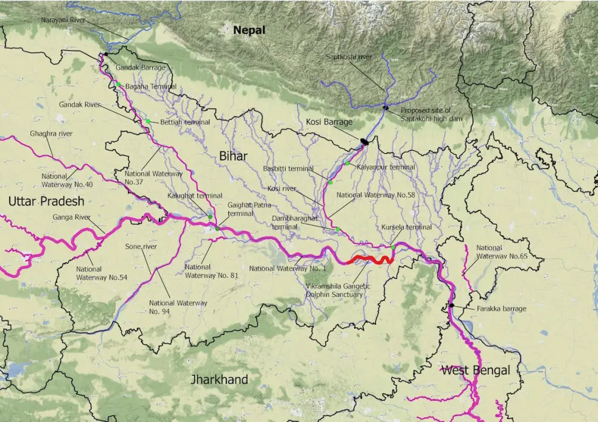

Mithila Jal Shakti
Explore Our Work
Our Mission
openWater combines grassroots community engagement with modern sensor technology to protect and restore the rivers that sustain millions of lives across the Mithila belt.
Gallery
Events & Talks
Quarterly Journal
Peer-reviewed findings from our field missions and laboratory studies, published every quarter and available free to all.
News
Autonomous, 4G-connected vessel designed to map rivers pollution and detect illegal industrial dumping at 1/10th the cost of current solutions.
openWater was founded in 2026 by Anand K. Jha, a high school student from the Mithila region who witnessed the rapid deterioration of the rivers that define the cultural and ecological identity of this land.
We operate as a registered NGO and foundation, combining open-source technology with deep community trust to generate environmental intelligence that is scientifically rigorous and practically usable by farmers, fishers, policymakers, and students.
Our work spans real-time monitoring, field research, policy advocacy, and youth education — grounded in the belief that clean rivers are a right, not a privilege.
Our Team
We welcome volunteers, researchers, interns and partner organisations. Whether you bring scientific expertise or community connections, there is a meaningful role for you in openWater.
Apply to JoinChataria, Darbhanga — Mithila, Bihar 846004, India